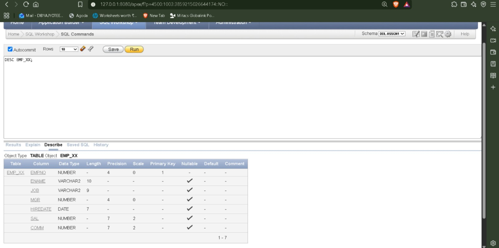
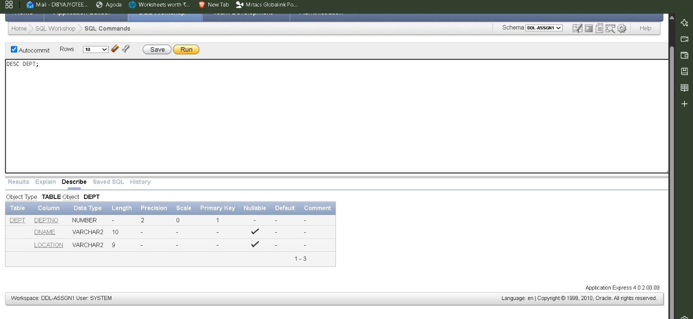
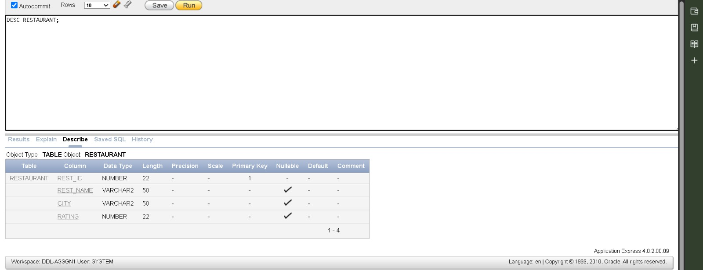

DBMS · Assignment 1 · SQL Workshop
Lucid, exam/viva-ready notes on Data Definition Language — the commands that shape a database's structure (tables, columns, constraints) rather than its data.
CREATE TABLE EMP_XX (
Empno NUMBER(4) PRIMARY KEY,
Ename VARCHAR2(10) CHECK (Ename = UPPER(Ename)),
Job VARCHAR2(9),
Mgr NUMBER(4),
Hiredate DATE,
Sal NUMBER(7,2),
Comm NUMBER(7,2),
CONSTRAINT chk_sal_XX CHECK (Sal BETWEEN 1500 AND 50000)
);Replace XX with your roll number.
Every database needs a place to store employee details. This command creates that table and adds rules so invalid data cannot be entered.
| Column | Purpose |
|---|---|
| Empno | Employee ID |
| Ename | Employee Name |
| Job | Job role |
| Mgr | Manager's Employee ID |
| Hiredate | Joining date |
| Sal | Salary |
| Comm | Commission |
PRIMARY KEY — Empno NUMBER(4) PRIMARY KEY makes every employee number unique and disallows NULL.
| Empno |
|---|
| 1001 |
| 1002 |
Trying another 1002 gives an error.
CHECK (uppercase) — CHECK (Ename = UPPER(Ename)) only accepts uppercase names.
| Input | Result |
|---|---|
| RAHUL | Accepted |
| Rahul | Rejected |
Salary CHECK — CHECK (Sal BETWEEN 1500 AND 50000).
| Salary | Result |
|---|---|
| 2000 | Accepted |
| 1000 | Rejected |
| 70000 | Rejected |
CREATE TABLE table_name (
column datatype constraint,
column datatype constraint
);Table created.DESC EMP_XX;After creating a table, we should verify that all columns and data types were created correctly.
Displays column names, data types, and NULL permission.
DESC table_name;| Name | Null | Type |
|---|---|---|
| EMPNO | NOT NULL | NUMBER(4) |
| ENAME | — | VARCHAR2(10) |
| JOB | — | VARCHAR2(9) |
| MGR | — | NUMBER(4) |
| HIREDATE | — | DATE |
| SAL | — | NUMBER(7,2) |
| COMM | — | NUMBER(7,2) |

ALTER TABLE EMP_XX ADD DEPTNO INTEGER;Suppose the company later decides every employee should belong to a department. Instead of recreating the table, we simply add a new column.
| EMPNO | ENAME |
|---|---|
| 1001 | RAHUL |
| EMPNO | ENAME | DEPTNO |
|---|---|---|
| 1001 | RAHUL | NULL |
ALTER TABLE table_name
ADD column_name datatype;Table altered.CREATE TABLE DEPT (
Deptno NUMBER(2) PRIMARY KEY,
Dname VARCHAR2(10) CHECK (Dname = UPPER(Dname)),
Location VARCHAR2(9)
CHECK (Location IN ('KOL','MUM','DEL')),
City VARCHAR2(30)
);Instead of writing department names repeatedly for every employee, we create one department table.
Stores department number, department name, allowed office location, and city.
| Input | Result |
|---|---|
| KOL | Accepted |
| DEL | Accepted |
| MUM | Accepted |
| CHENNAI | Rejected |
CREATE TABLE table_name (
column datatype,
column datatype
);Table created.
ALTER TABLE EMP_XX
ADD CONSTRAINT fk_deptno_XX
FOREIGN KEY (DEPTNO)
REFERENCES DEPT(Deptno);Every employee should belong to a real department. Without this rule, an employee could reference a department number that doesn't exist. The foreign key prevents this.
DEPT table contains Deptno 10 and 20. An employee can reference 10 or 20, but not 30 if it's absent.
ALTER TABLE child_table
ADD CONSTRAINT constraint_name
FOREIGN KEY(column)
REFERENCES parent_table(column);Table altered.ALTER TABLE DEPT DROP COLUMN City;If a column becomes unnecessary, it can be removed.
| Deptno | Dname | Location | City |
|---|---|---|---|
| 10 | SALES | KOL | Kolkata |
| Deptno | Dname | Location |
|---|---|---|
| 10 | SALES | KOL |
ALTER TABLE table_name
DROP COLUMN column_name;Table altered.ALTER TABLE EMP_XX
DROP CONSTRAINT chk_sal_XX;Sometimes business rules change. Old rule: salary must be between 1500 and 50000. After dropping it, any salary becomes acceptable.
ALTER TABLE table_name
DROP CONSTRAINT constraint_name;Table altered.CREATE TABLE DEPT_DUP
AS SELECT * FROM DEPT;Creates a copy of another table quickly. Since DEPT is empty, only the structure gets copied.
| Feature | Copied? |
|---|---|
| Columns | Yes |
| Data | No |
| Constraints | No |
CREATE TABLE new_table
AS SELECT * FROM old_table;Table created.RENAME DEPT_DUP TO DUP_DEPT;Changes the table name without changing its contents.
RENAME old_name TO new_name;Table renamed.DROP TABLE DUP_DEPT;Removes a table completely — structure gone, data gone.
DROP TABLE table_name;Table dropped.CREATE TABLE RESTAURANT (
rest_id NUMBER PRIMARY KEY,
rest_name VARCHAR2(50),
city VARCHAR2(50),
rating NUMBER
);Stores restaurant information.
| rest_id | rest_name | city | rating |
|---|---|---|---|
| 1 | FOOD HUB | Kolkata | 4.5 |
Table created.CREATE TABLE MENU_ITEM (
item_id NUMBER PRIMARY KEY,
rest_id NUMBER,
item_name VARCHAR2(50),
price NUMBER(7,2),
CONSTRAINT fk_rest
FOREIGN KEY(rest_id)
REFERENCES RESTAURANT(rest_id)
);Stores menu items connected to restaurants — one restaurant, many menu items.
Table created.
ALTER TABLE RESTAURANT
ADD CONSTRAINT chk_rating
CHECK (rating BETWEEN 0 AND 5);Restaurant ratings should stay between 0 and 5.
| Rating | Result |
|---|---|
| 4.8 | Accepted |
| 5 | Accepted |
| 6 | Rejected |
Table altered.ALTER TABLE MENU_ITEM
ADD is_veg NUMBER(1);Oracle has no native BOOLEAN table type, so a 1-digit NUMBER stands in for it.
| Value | Meaning |
|---|---|
| 1 | Vegetarian |
| 0 | Non-Vegetarian |
Table altered.ALTER TABLE MENU_ITEM
DROP COLUMN is_veg;Removes the column if it is no longer needed.
Table altered.One of the most common viva questions.
| Feature | DROP | TRUNCATE |
|---|---|---|
| Deletes data | Yes | Yes |
| Deletes structure | Yes | No |
| Table remains? | No | Yes |
| Can insert again immediately? | No (table gone) | Yes |
After TRUNCATE, the table stays but is empty. After DROP, the table itself no longer exists.
DROP TABLE EMP_XX CASCADE CONSTRAINTS;
DROP TABLE DEPT CASCADE CONSTRAINTS;
DROP TABLE DUP_DEPT CASCADE CONSTRAINTS;
DROP TABLE MENU_ITEM CASCADE CONSTRAINTS;
DROP TABLE RESTAURANT CASCADE CONSTRAINTS;Some tables depend on others through foreign keys — MENU_ITEM depends on RESTAURANT, and EMP_XX depends on DEPT. Without CASCADE CONSTRAINTS, Oracle blocks the deletion.
Table dropped.
(Repeated for each table.)BEGIN
FOR t IN (SELECT table_name FROM user_tables) LOOP
EXECUTE IMMEDIATE
'DROP TABLE ' || t.table_name ||
' CASCADE CONSTRAINTS';
END LOOP;
END;
/Deletes every table owned by your current Oracle account.
PL/SQL procedure successfully completed.Run these after completing the lab, replacing _XX with your roll number.
DESC EMP_XX;
DESC DEPT;
DESC RESTAURANT;
DESC MENU_ITEM;Confirms that tables exist, columns are correct, and data types match the lab requirements.
| Name | Null | Type |
|---|---|---|
| REST_ID | NOT NULL | NUMBER |
| REST_NAME | — | VARCHAR2(50) |
| CITY | — | VARCHAR2(50) |
| RATING | — | NUMBER |
These DESC commands are the quickest way to verify your DDL operations worked correctly before submitting the lab.